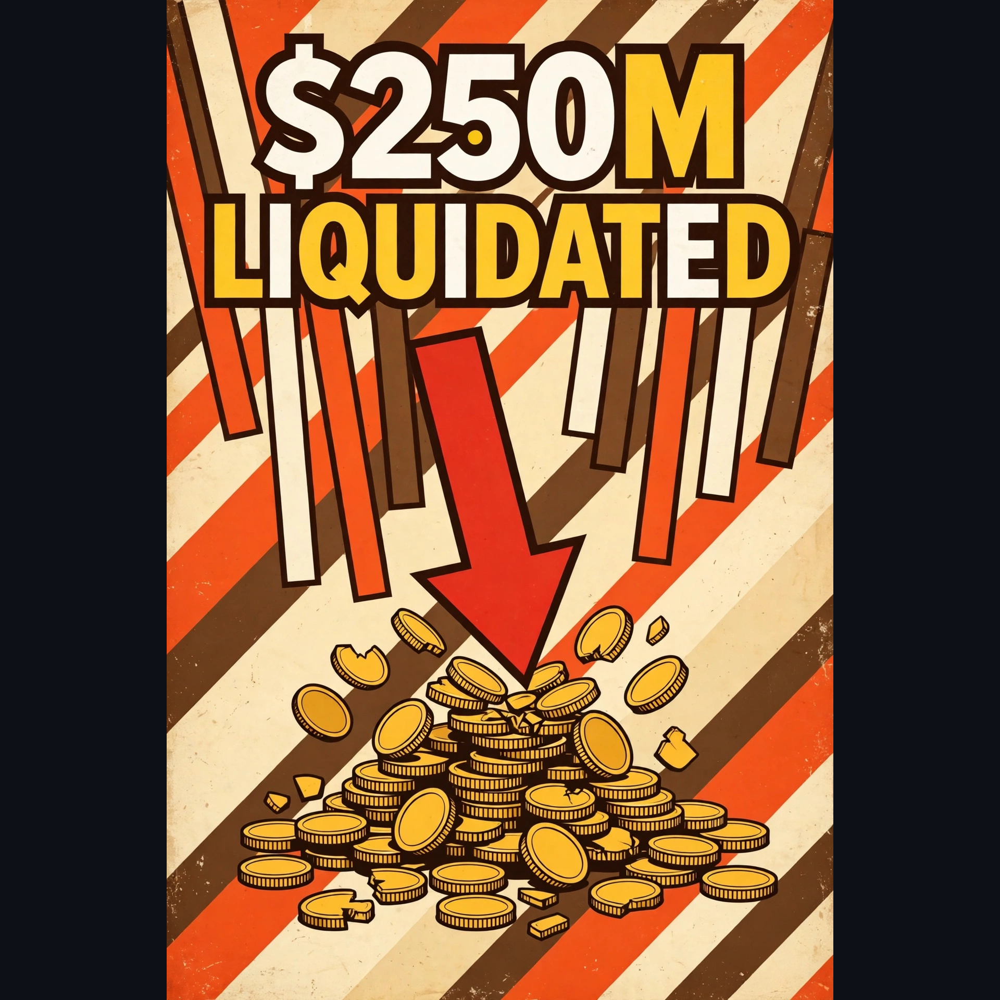

Morning Brief • Wednesday 60s Look
Bitcoin Stories — Wednesday, Nov 4, 2026
Bitcoin stages a V-shaped comeback above $78,000 as midterm uncertainty fades, rebounding after the dip below $76,000.
The Binance hack began with a fake job interview that opened a months-long campaign, with $4.72B withdrawn.

Bitcoin's dip below $76,000 liquidated about $250M in leveraged positions.
Spot Bitcoin ETF outflows slow to $115.6M on Nov 3 after $398.6M on Nov 2.
Bitcoin holds its 200-day trend near $76,500 as a Democratic Congress rewrites crypto rules.